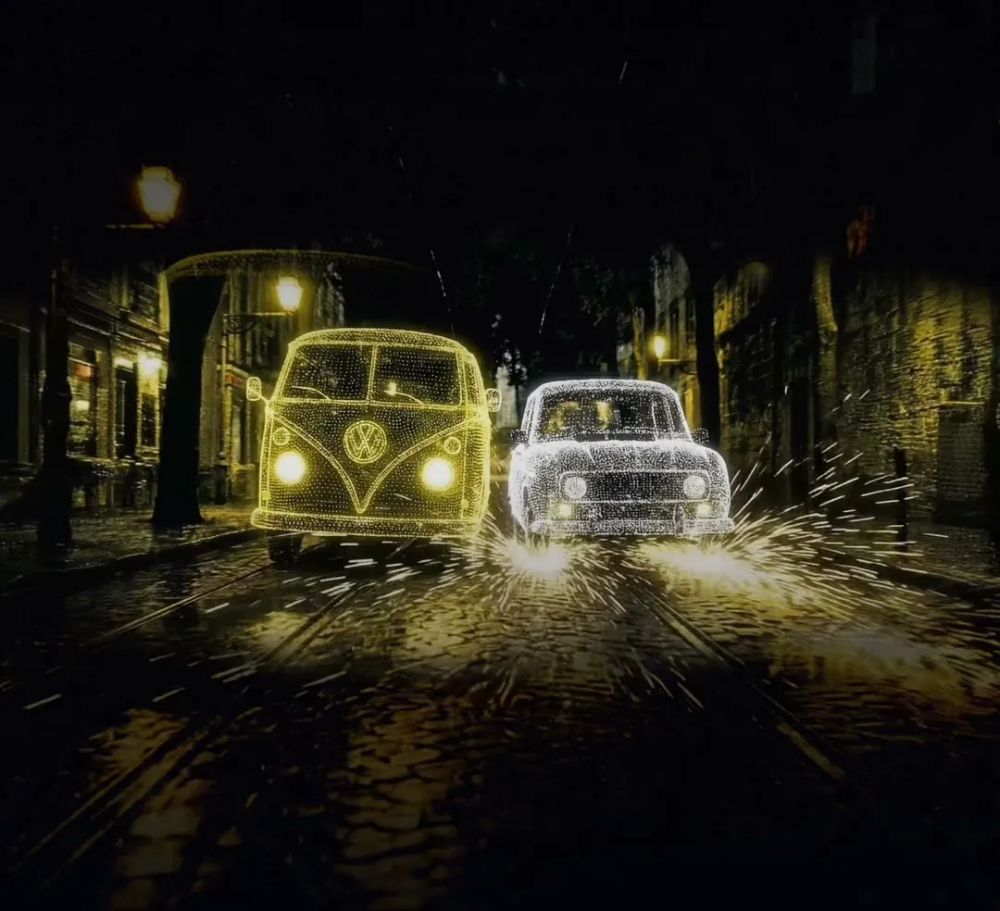
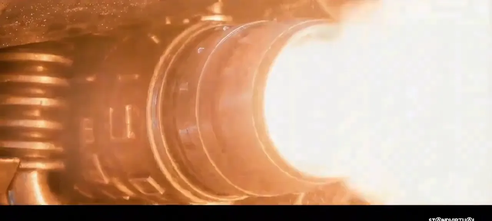
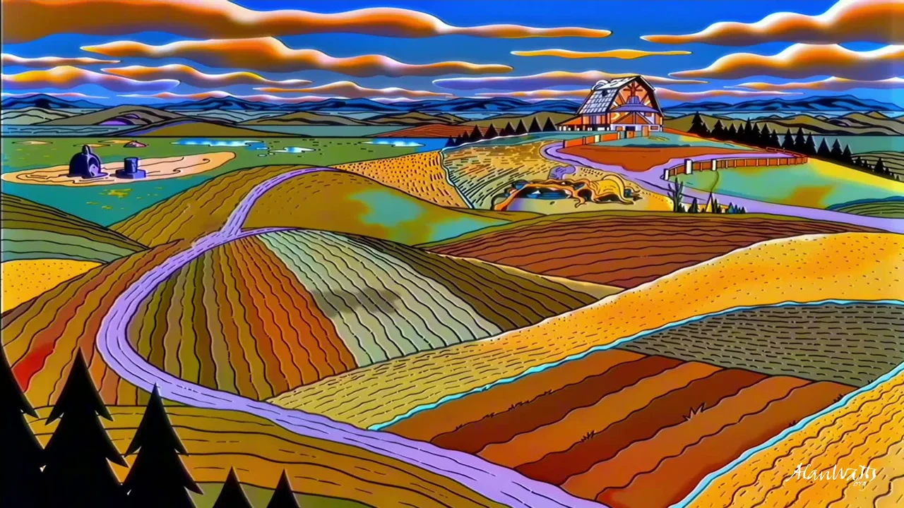
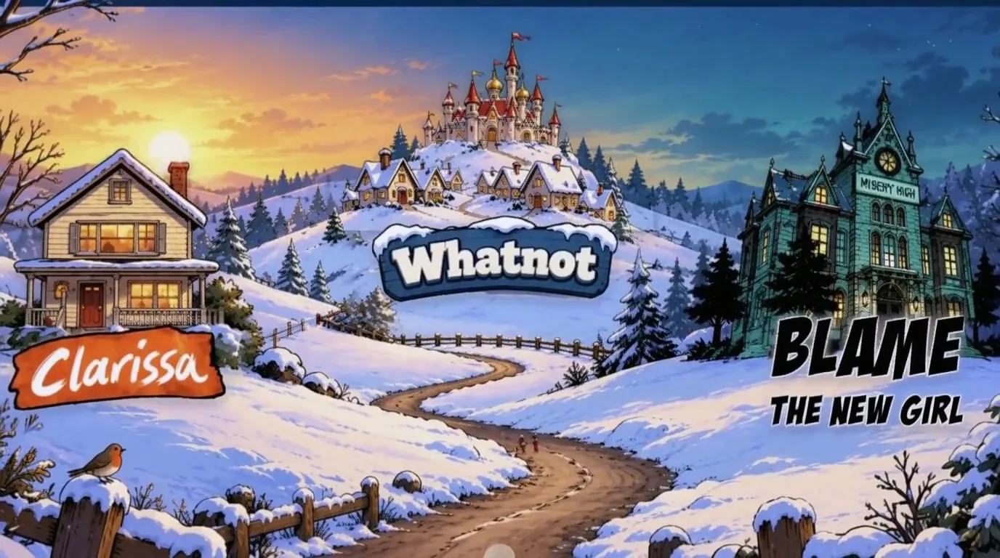
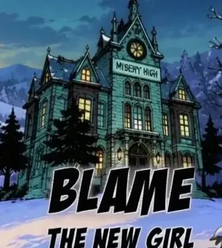
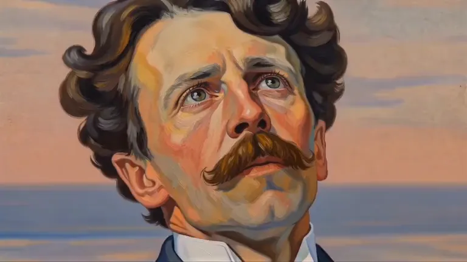

StandVirtual
A conference opening film, built for three screens.
Explore project ↗
204.ai / Film & animation
Films, animated worlds and creative collaborations. From an archival voice or an original character to the finished film.
Watch the full reel ↘
Everyone in the Scottish town of Dunbrae woke up with the same face.
A documentary crew arrives to meet Dimi, who claims the face was his, just as new mutations appear. A deadpan comedy about identity and minor celebrity.
A 204 collaboration
The Emmy-winning creator of Clarissa Explains It All and Bear in the Big Blue House develops animation and interactive stories with 204.
The film

A journey through the studio’s animated worlds.
Choose a film or process reel

Blame: The New Girl ↗Written by Mitchell Kriegman · Art by Fabian Lacey · Produced by SnackshopSelected development work.

Immersive experience · RnA Studio
We created Dream Worlds for Trail of Angels, an immersive VR experience with Oniroco. At RnA Studio in Lisbon, we extended the painted world of M. K. Čiurlionis into interactive installations and made visuals for the digital gallery.
Explore the film and installations ↗